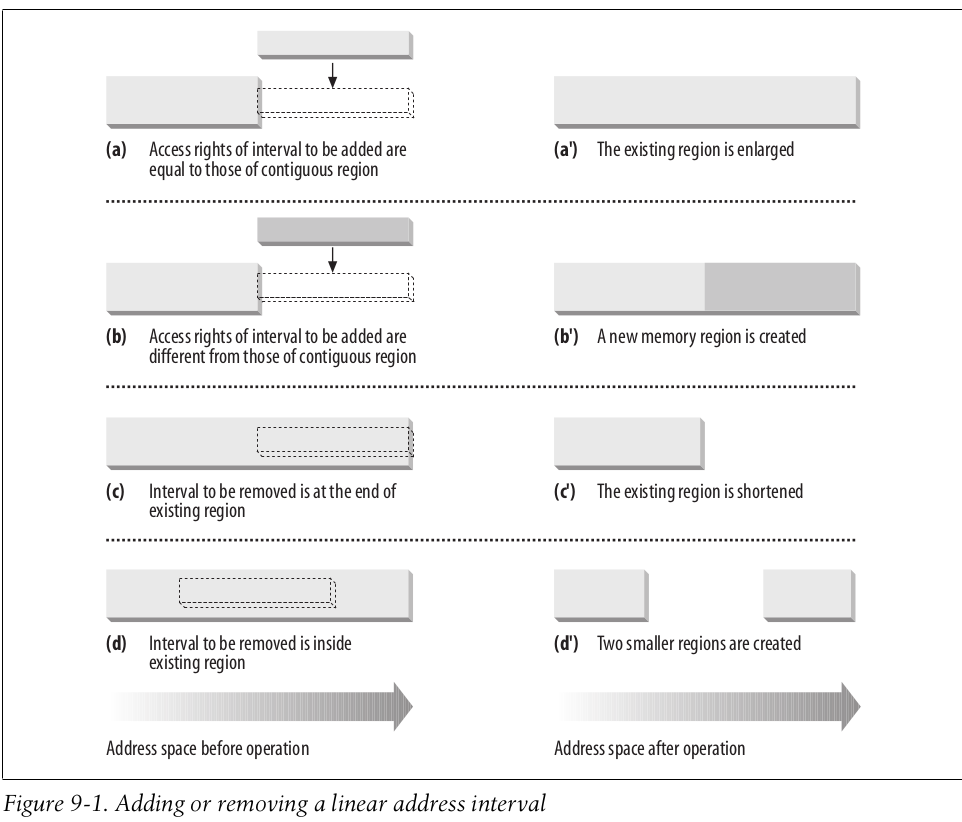
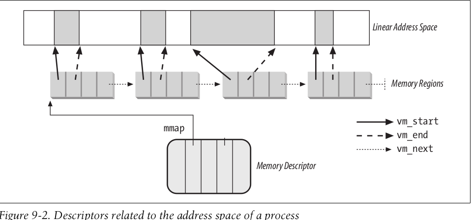
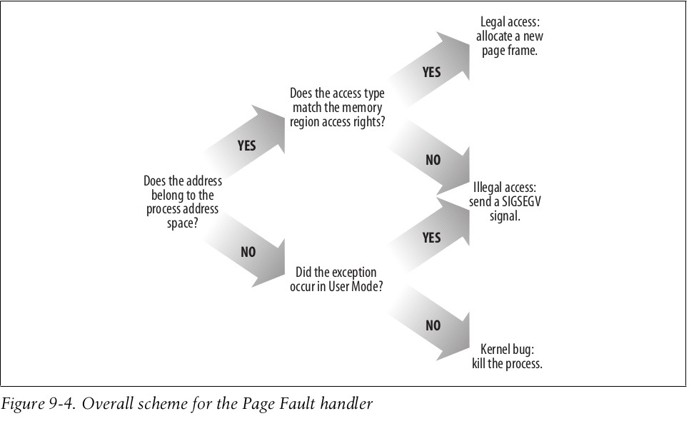
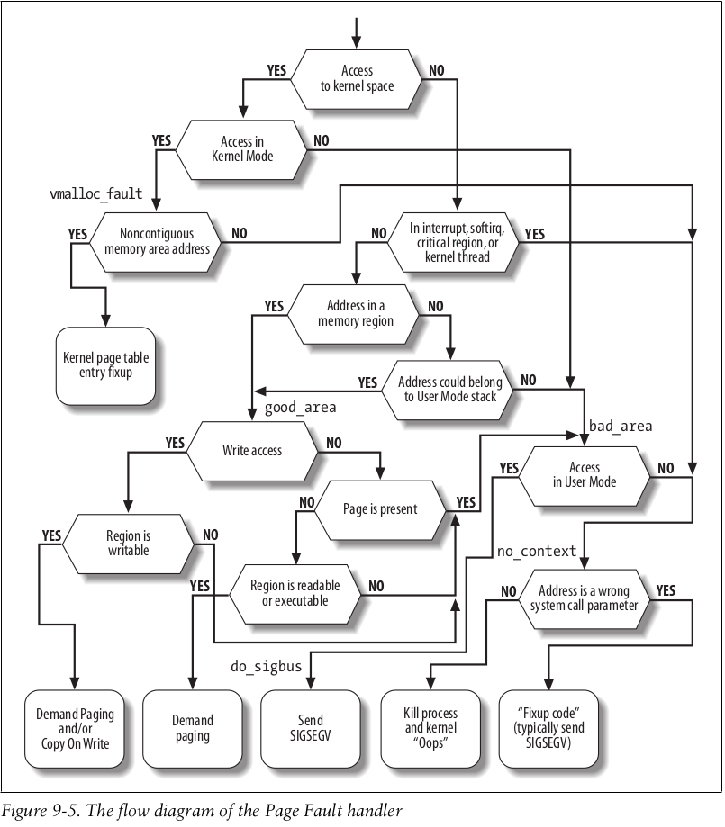

linux内核学习-三
前言
前面博客分析了Linux内核对于物理内存的管理机制，下面介绍一下Linux内核对于进程地址空间的管理机制
实际上，进程地址空间，也就是进程的虚拟地址空间
进程的地址空间
进程的地址空间(address space)，是由允许进程使用的全部线性地址组成的。
也就是说，内核通过管理所谓的线性区的资源，从而表示一个进程的线性地址区间，进而管理进程的地址空间
struct mm_struct
进程通过位于include/linux/mm_types.h的进程内存描述符，管理进程中与进程地址空间有关的全部信息。其相关的重要字段如下所示
| 类型 | 字段名称 | 描述 |
|---|---|---|
| struct vm_area_struct * | mmap | 指向线性区对象的链表头 |
| struct rb_root | mm_rb | 指向线性区对象的红-黑树的根 |
| unsigned long ()(struct file filp, unsigned long addr, unsigned long len, unsigned long pgoff, unsigned long flags) | get_ummaped_area | 在进程地址空间中搜索有效线性地址区间的成员函数 |
| unsigned long | mmap_base | 第一个分配的匿名线性区或文件内存映射的线性地址 |
| pgd_t * | pgd | 页全局目录 |
| atomic_t | mm_users | 次使用计数器，即共享该内存描述符的轻量级进程个数 |
| atomic_t | mm_count | 主使用计数器 |
| int | map_count | 线性区的个数 |
| spinlock_t | page_table_lock | 线性区页表的自旋锁 |
| struct rw_semaphore | mmap_lock | 线性区的读/写信号量 |
| struct list_head | mmlist | 指向内存描述符链表中的相邻元素 |
| unsigned long | start_code | 可执行代码的起始地址 |
| unsigned long | end_code | 可执行代码的终止地址 |
| unsigned long | start_data | 已初始化数据的起始地址 |
| unsigned long | end_data | 已初始化数据的终止地址 |
| unsigned long | start_brk | 堆的起始地址 |
| unsigned long | brk | 堆的终止地址 |
| unsigned long | start_stack | 用户态栈的起始地址 |
| unsigned long | arg_start | 命令行参数的起始地址 |
| unsigned long | arg_end | 命令行参数的终止地址 |
| unsigned long | env_start | 环境变量的起始地址 |
| unsigned long | env_end | 环境变量的终止地址 |
| unsigned long | total_vm | 进程地址空间的总页数 |
| unsigned long[] | saved_auxv | 执行ELF程序所需的辅助信息 |
struct vm_area_struct
内存描述符所描述的线性区，就是通过位于include/linux/mm_types.h的结构体进行管理的。下面介绍一下其重要的字段
| 类型 | 成员名称 | 描述 |
|---|---|---|
| unsigned long | vm_start | 该线性区的起始线性地址 |
| unsigned long | vm_end | 该线性区的终止线性地址 |
| struct mm_struct * | vm_mm | 该线性区所在的进程内存描述符 |
| struct vm_area_struct* | vm_next | 进程内存描述符中线性区对象链表的下一个线性区 |
| struct vm_area_struct* | vm_prev | 进程内存描述符中线性区对象链表的上一个线性区 |
| struct rb_node | vm_rb | 用于进程内存描述符的线性区对象的红黑树数据结构 |
| pgprot_t | vm_page_prot | 该线性区的访问许可权 |
| unsigned long | vm_flags | 该线性区的标志 |
| const struct vm_operations_struct * | vm_ops | 该线性区所执行的成员函数 |
| struct file * | vm_file | 该线性区可能的映射文件的文件对象 |
| unsigned long | vm_pgoff | 该线性区可能的映射文件的偏移量 |
需要说明的是，进程内存描述符中的不同线性区不会折叠——为此，Linux内核在向进程内存描述符中添加新的线性地址区间时，会涉及到已有的线性地址空间的调整，如下图所示。

线性区数据结构
进程所拥有的所有线性区，是通过链表结构，按照线性区的线性地址进行升序管理的。如下图所示

当然，为了提高效率，Linux添加了红-黑树结构——其和上述的链表结构指向同一个线性区描述符。
可以通过红-黑树结构快速找到线性区的前、后元素，并通过搜索结果快速更新链表
线性区访问权限
实际上，关于页的标志，目前已经提到了两种
- 分页机制中，每个页表项中包含着诸如Read/Write、Present或User/Supervisor等
- 页描述符中，其flags字段中包含着诸如PG_locked等
而这里介绍第三种——线性区的vm_page_prot或vm_flags字段，包含着描述该线性区全部页的相关信息，部分重要内容如下所示
| 标志名 | 描述 |
|---|---|
| VM_READ | 该线性区中所有页是可读的 |
| VM_WRITE | 该线性区中所有页是可写的 |
| VM_EXEC | 该线性区中所有页是可执行的 |
实际上可以看到，线性区的访问权限和页表标志的关系比较紧密——例如其都有Read、Write相关的属性信息。总而言之，线性区的访问权限和页表的标志，共同提供了用户态二进制程序的相关段权限机制。
线性区的操作
下面介绍一些线性区描述符的常用处理函数
find_vma
Linux内核使用位于mm/mmap.c的struct vm_area_struct *find_vma(struct mm_struct *mm, unsigned long addr)函数，在进程内存描述符mm中，查找线性区的vm_end大于addr线性地址的第一个线性区的位置。
下面给出简化很多细节的逻辑1
2
3
4
5
6
7
8
9
10
11
12
13
14
15
16
17
18
19
20
21
22
23
24
25struct vm_area_struct *find_vma(struct mm_struct *mm, unsigned long addr)
{
struct rb_node *rb_node;
struct vm_area_struct *vma;
mmap_assert_locked(mm);
rb_node = mm->mm_rb.rb_node;
while (rb_node) {
struct vm_area_struct *tmp;
tmp = rb_entry(rb_node, struct vm_area_struct, vm_rb);
if (tmp->vm_end > addr) {
vma = tmp;
if (tmp->vm_start <= addr)
break;
rb_node = rb_node->rb_left;
} else
rb_node = rb_node->rb_right;
}
return vma;
}
其基本思路就是通过进程内存描述符的红-黑树结构的相关操作，从而快速筛选符合条件的结果
find_vma_intersection
Linux内核使用位于include/linux/mm.h的static inline struct vm_area_struct *find_vma_intersection(struct mm_struct *mm, unsigned long start_addr, unsigned long end_addr)函数，在进程内存描述符mm中，查找与给定范围的线性区相重叠的第一个线性区位置
其逻辑如下所示，还是比较简单的
1 | static inline |
其基本思路就是获取当前线性区(线性区起始地址)之后的第一个线性区，然后判断这两个线性区是否相交即可
get_unmapped_area
Linux内核使用位于mm/mmap.c的unsigned long get_unmapped_area(struct file *file, unsigned long addr, unsigned long len, unsigned long pgoff, unsigned long flags)函数，在进程内存描述符mm中，找到一个可以分配的，长度为len的线性地址区间
下面给出化简后的逻辑1
2
3
4
5
6
7
8
9
10
11
12
13
14
15
16
17
18
19
20
21
22
23
24
25
26
27
28
29
30
31
32
33
34
35
36
37
38
39
40
41
42
43
44
45
46
47
48
49
50
51
52
53
54
55
56
57
58
59
60
61
62
63
64
65
66
67
68
69
70
71
72
73
74
75
76
77
78
79
80
81
82
83
84
85
86
87
88
89
90
91
92
93
94
95
96
97
98
99
100
101
102
103
104
105
106
107
108
109
110
111
112
113
114
115
116
117
118
119
120
121
122
123
124
125
126
127
128
129
130
131
132
133
134
135
136
137
138
139
140
141
142
143
144
145
146
147
148
149
150
151
152
153
154
155
156
157
158
159
160
161
162
163
164
165
166
167
168
169
170
171
172
173
174
175
176
177
178
179
180
181
182
183
184
185
186
187
188
189
190
191
192
193
194
195
196
197
198
199
200
201
202
203
204
205
206
207
208
209
210
211
212
213
214
215
216
217
218
219
220
221
222
223
224
225
226
227
228
229
230
231
232
233
234
235
236
237
238
239
240
241
242
243
244
245
246
247
248unsigned long
get_unmapped_area(struct file *file, unsigned long addr, unsigned long len,
unsigned long pgoff, unsigned long flags)
{
unsigned long (*get_area)(struct file *, unsigned long,
unsigned long, unsigned long, unsigned long);
/*
* arch_get_unmapped_area 或 arch_get_unmapped_area_topdown
*/
get_area = current->mm->get_unmapped_area;
addr = get_area(file, addr, len, pgoff, flags);
error = security_mmap_addr(addr);
return error ? error : addr;
}
unsigned long
arch_get_unmapped_area(struct file *filp, unsigned long addr,
unsigned long len, unsigned long pgoff, unsigned long flags)
{
struct mm_struct *mm = current->mm;
struct vm_area_struct *vma, *prev;
struct vm_unmapped_area_info info;
const unsigned long mmap_end = arch_get_mmap_end(addr);
info.flags = 0;
info.length = len;
info.low_limit = mm->mmap_base;
info.high_limit = mmap_end;
info.align_mask = 0;
info.align_offset = 0;
return vm_unmapped_area(&info);
}
unsigned long
arch_get_unmapped_area_topdown(struct file *filp, unsigned long addr,
unsigned long len, unsigned long pgoff,
unsigned long flags)
{
struct vm_area_struct *vma, *prev;
struct mm_struct *mm = current->mm;
struct vm_unmapped_area_info info;
const unsigned long mmap_end = arch_get_mmap_end(addr);
info.flags = VM_UNMAPPED_AREA_TOPDOWN;
info.length = len;
info.low_limit = max(PAGE_SIZE, mmap_min_addr);
info.high_limit = arch_get_mmap_base(addr, mm->mmap_base);
info.align_mask = 0;
info.align_offset = 0;
addr = vm_unmapped_area(&info);
return addr;
}
unsigned long vm_unmapped_area(struct vm_unmapped_area_info *info)
{
unsigned long addr;
if (info->flags & VM_UNMAPPED_AREA_TOPDOWN)
addr = unmapped_area_topdown(info);
else
addr = unmapped_area(info);
trace_vm_unmapped_area(addr, info);
return addr;
}
static unsigned long unmapped_area(struct vm_unmapped_area_info *info)
{
/*
* We implement the search by looking for an rbtree node that
* immediately follows a suitable gap. That is,
* - gap_start = vma->vm_prev->vm_end <= info->high_limit - length;
* - gap_end = vma->vm_start >= info->low_limit + length;
* - gap_end - gap_start >= length
*/
struct mm_struct *mm = current->mm;
struct vm_area_struct *vma;
unsigned long length, low_limit, high_limit, gap_start, gap_end;
/* Adjust search length to account for worst case alignment overhead */
length = info->length + info->align_mask;
high_limit = info->high_limit - length;
low_limit = info->low_limit + length;
vma = rb_entry(mm->mm_rb.rb_node, struct vm_area_struct, vm_rb);
while (true) {
/* Visit left subtree if it looks promising */
gap_end = vm_start_gap(vma);
if (gap_end >= low_limit && vma->vm_rb.rb_left) {
struct vm_area_struct *left =
rb_entry(vma->vm_rb.rb_left,
struct vm_area_struct, vm_rb);
if (left->rb_subtree_gap >= length) {
vma = left;
continue;
}
}
gap_start = vma->vm_prev ? vm_end_gap(vma->vm_prev) : 0;
check_current:
/* Check if current node has a suitable gap */
if (gap_start > high_limit)
return -ENOMEM;
if (gap_end >= low_limit &&
gap_end > gap_start && gap_end - gap_start >= length)
goto found;
/* Visit right subtree if it looks promising */
if (vma->vm_rb.rb_right) {
struct vm_area_struct *right =
rb_entry(vma->vm_rb.rb_right,
struct vm_area_struct, vm_rb);
if (right->rb_subtree_gap >= length) {
vma = right;
continue;
}
}
/* Go back up the rbtree to find next candidate node */
while (true) {
struct rb_node *prev = &vma->vm_rb;
if (!rb_parent(prev))
goto check_highest;
vma = rb_entry(rb_parent(prev),
struct vm_area_struct, vm_rb);
if (prev == vma->vm_rb.rb_left) {
gap_start = vm_end_gap(vma->vm_prev);
gap_end = vm_start_gap(vma);
goto check_current;
}
}
}
check_highest:
/* Check highest gap, which does not precede any rbtree node */
gap_start = mm->highest_vm_end;
gap_end = ULONG_MAX; /* Only for VM_BUG_ON below */
if (gap_start > high_limit)
return -ENOMEM;
found:
/* We found a suitable gap. Clip it with the original low_limit. */
if (gap_start < info->low_limit)
gap_start = info->low_limit;
/* Adjust gap address to the desired alignment */
gap_start += (info->align_offset - gap_start) & info->align_mask;
VM_BUG_ON(gap_start + info->length > info->high_limit);
VM_BUG_ON(gap_start + info->length > gap_end);
return gap_start;
}
static unsigned long unmapped_area_topdown(struct vm_unmapped_area_info *info)
{
struct mm_struct *mm = current->mm;
struct vm_area_struct *vma;
unsigned long length, low_limit, high_limit, gap_start, gap_end;
/* Adjust search length to account for worst case alignment overhead */
length = info->length + info->align_mask;
/*
* Adjust search limits by the desired length.
* See implementation comment at top of unmapped_area().
*/
gap_end = info->high_limit;
high_limit = gap_end - length;
low_limit = info->low_limit + length;
/* Check highest gap, which does not precede any rbtree node */
gap_start = mm->highest_vm_end;
if (gap_start <= high_limit)
goto found_highest;
vma = rb_entry(mm->mm_rb.rb_node, struct vm_area_struct, vm_rb);
if (vma->rb_subtree_gap < length)
return -ENOMEM;
while (true) {
/* Visit right subtree if it looks promising */
gap_start = vma->vm_prev ? vm_end_gap(vma->vm_prev) : 0;
if (gap_start <= high_limit && vma->vm_rb.rb_right) {
struct vm_area_struct *right =
rb_entry(vma->vm_rb.rb_right,
struct vm_area_struct, vm_rb);
if (right->rb_subtree_gap >= length) {
vma = right;
continue;
}
}
check_current:
/* Check if current node has a suitable gap */
gap_end = vm_start_gap(vma);
if (gap_end < low_limit)
return -ENOMEM;
if (gap_start <= high_limit &&
gap_end > gap_start && gap_end - gap_start >= length)
goto found;
/* Visit left subtree if it looks promising */
if (vma->vm_rb.rb_left) {
struct vm_area_struct *left =
rb_entry(vma->vm_rb.rb_left,
struct vm_area_struct, vm_rb);
if (left->rb_subtree_gap >= length) {
vma = left;
continue;
}
}
/* Go back up the rbtree to find next candidate node */
while (true) {
struct rb_node *prev = &vma->vm_rb;
if (!rb_parent(prev))
return -ENOMEM;
vma = rb_entry(rb_parent(prev),
struct vm_area_struct, vm_rb);
if (prev == vma->vm_rb.rb_right) {
gap_start = vma->vm_prev ?
vm_end_gap(vma->vm_prev) : 0;
goto check_current;
}
}
}
found:
/* We found a suitable gap. Clip it with the original high_limit. */
if (gap_end > info->high_limit)
gap_end = info->high_limit;
found_highest:
/* Compute highest gap address at the desired alignment */
gap_end -= info->length;
gap_end -= (gap_end - info->align_offset) & info->align_mask;
VM_BUG_ON(gap_end < info->low_limit);
VM_BUG_ON(gap_end < gap_start);
return gap_end;
}
其基本思路就是传入的方向，遍历线性地址的红黑树结构，并查找线性区之间合适的空间，从而返回该空间即可
do_mmap
Linux内核使用位于mm/mmap.c的unsigned long do_mmap(struct file *file, unsigned long addr, unsigned long len, unsigned long prot, unsigned long flags, unsigned long pgoff, unsigned long *populate, struct list_head *uf)函数，从而从addr地址处开始，查找并插入一段长度为len的线性区
下面给出化简后的逻辑1
2
3
4
5
6
7
8
9
10
11
12
13
14
15
16
17
18
19
20
21
22
23
24
25
26
27
28
29
30
31
32
33
34unsigned long do_mmap(struct file *file, unsigned long addr,
unsigned long len, unsigned long prot,
unsigned long flags, unsigned long pgoff,
unsigned long *populate, struct list_head *uf)
{
addr = get_unmapped_area(file, addr, len, pgoff, flags);
addr = mmap_region(file, addr, len, vm_flags, pgoff, uf);
return addr;
}
unsigned long mmap_region(struct file *file, unsigned long addr,
unsigned long len, vm_flags_t vm_flags, unsigned long pgoff,
struct list_head *uf)
{
/*
* Can we just expand an old mapping?
*/
vma = vma_merge(mm, prev, addr, addr + len, vm_flags,
NULL, file, pgoff, NULL, NULL_VM_UFFD_CTX);
if(vma) { return vma; }
vma = vm_area_alloc(mm);
vma->vm_start = addr;
vma->vm_end = addr + len;
vma->vm_flags = vm_flags;
vma->vm_page_prot = vm_get_page_prot(vm_flags);
vma->vm_pgoff = pgoff;
vma_link(mm, vma, prev, rb_link, rb_parent);
return vma;
}
其基本思路就是调用get_unmapped_area找到符合条件的线性区后，更新进程内存描述符的相关字段即可
do_munmap
Linux内核使用位于mm/mmap.c的int do_munmap(struct mm_struct *mm, unsigned long start, size_t len, struct list_head *uf)函数，删除进程内存描述符mm的给定线性区间
这里需要特别说明一下，给定的线性区间可能跨越进程内存描述符的多个线性区，因此需要小心处理
下面给出化简后的逻辑1
2
3
4
5
6
7
8
9
10
11
12
13
14
15
16
17
18
19
20
21
22
23
24
25
26
27
28
29int do_munmap(struct mm_struct *mm, unsigned long start, size_t len,
struct list_head *uf)
{
return __do_munmap(mm, start, len, uf, false);
}
int __do_munmap(struct mm_struct *mm, unsigned long start, size_t len,
struct list_head *uf, bool downgrade)
{
vma = find_vma_intersection(mm, start, end);
if (start > vma->vm_start) {
error = __split_vma(mm, vma, start, 0);
}
last = find_vma(mm, end);
if (last && end > last->vm_start) {
int error = __split_vma(mm, last, end, 1);
}
if (!detach_vmas_to_be_unmapped(mm, vma, prev, end))
downgrade = false;
unmap_region(mm, vma, prev, start, end);
/* Fix up all other VM information */
remove_vma_list(mm, vma);
}
其基本思路就是找到所有的与相交的线性区，并将第一个和最后一个线性区进行切分(避免释放不在区间的线性区间)，最后释放上述这些线性区间，并清除相关的页表中的页框映射即可
缺页异常处理程序
根据前面进程的线性空间的分配机制
当为进程分配相关的线性空间时，并没有立即分配该空间对应的页框——也就是访问进程类似的地址空间时，其同样会产生异常
因此，Linux的缺页异常处理程序必须可以区分如下情况：
- 访问不属于进程地址空间的地址
- 访问属于进程地址空间，但尚未分配物理页框的地址
其情况和相关的处理程序的示意图如下所示

由于分页机制本身就是架构相关的，则其相关的异常处理程序自然也是架构相关，这里主要介绍x86_64架构下的缺页异常处理
handle_page_fault
Linux内核使用位于arch/x86/mm/fault.c的static __always_inline void handle_page_fault(struct pt_regs *regs, unsigned long error_code, unsigned long address)函数处理相关的缺页异常
下面给出部分化简后的逻辑1
2
3
4
5
6
7
8
9
10
11
12
13
14
15
16
17
18
19static __always_inline void
handle_page_fault(struct pt_regs *regs, unsigned long error_code,
unsigned long address)
{
/* Was the fault on kernel-controlled part of the address space? */
if (unlikely(fault_in_kernel_space(address))) {
do_kern_addr_fault(regs, error_code, address);
} else {
do_user_addr_fault(regs, error_code, address);
/*
* User address page fault handling might have reenabled
* interrupts. Fixing up all potential exit points of
* do_user_addr_fault() and its leaf functions is just not
* doable w/o creating an unholy mess or turning the code
* upside down.
*/
local_irq_disable();
}
}
其基本思想就是根据异常地址的所属范围(内核态空间或用户态空间)，执行相关的逻辑即可。其示意图如下所示

由于这篇博客主要介绍的是进程的地址空间，主要涉及的是用户态的线性区，因此主要分析访问用户态的线性空间导致的异常
do_user_addr_fault
Linux内核使用位于arch/x86/mm/fault.c的static inline void do_user_addr_fault(struct pt_regs *regs, unsigned long error_code, unsigned long address)函数，处理访问用户态线性空间导致的异常
下面给出部分化简后的逻辑1
2
3
4
5
6
7
8
9
10
11
12
13
14
15
16
17
18
19
20
21
22
23
24
25
26
27
28
29
30
31
32
33
34
35
36
37
38
39
40
41
42
43
44
45static inline
void do_user_addr_fault(struct pt_regs *regs,
unsigned long error_code,
unsigned long address)
{
vma = find_vma(mm, address);
if (likely(vma->vm_start <= address))
goto good_area;
if (unlikely(!(vma->vm_flags & VM_GROWSDOWN))) {
bad_area(regs, error_code, address);
return;
}
if (unlikely(expand_stack(vma, address))) {
bad_area(regs, error_code, address);
return;
}
/*
* Ok, we have a good vm_area for this memory access, so
* we can handle it..
*/
good_area:
if (unlikely(access_error(error_code, vma))) {
bad_area_access_error(regs, error_code, address, vma);
return;
}
/*
* If for any reason at all we couldn't handle the fault,
* make sure we exit gracefully rather than endlessly redo
* the fault. Since we never set FAULT_FLAG_RETRY_NOWAIT, if
* we get VM_FAULT_RETRY back, the mmap_lock has been unlocked.
*
* Note that handle_userfault() may also release and reacquire mmap_lock
* (and not return with VM_FAULT_RETRY), when returning to userland to
* repeat the page fault later with a VM_FAULT_NOPAGE retval
* (potentially after handling any pending signal during the return to
* userland). The return to userland is identified whenever
* FAULT_FLAG_USER|FAULT_FLAG_KILLABLE are both set in flags.
*/
fault = handle_mm_fault(vma, address, flags, regs);
}
其基本思路就是根据缺页异常的类型进行处理
- 访问进程的地址空间以内的错误地址——则检查相关的访问权限，并分配页框并更改页表即可
- 访问进程的地址空间以外的错误地址——则发送SIGSEGV信号即可
管理进程的地址空间
实际上，当Linux创建一个子进程时，Linux内核需要为其分配一个完整的新地址空间(可能会共享地址空间)。
而当Linux结束某进程时，Linux内核同样撤销其地址空间
copy_mm
Linux内核通过位于kernel/fork.c的static int copy_mm(unsigned long clone_flags, struct task_struct *tsk)函数，为新进程创建页表和相关内存描述符，从而构建新进程的地址空间
下面给出部分化简后的逻辑1
2
3
4
5
6
7
8
9
10
11
12
13
14
15
16
17static int copy_mm(unsigned long clone_flags, struct task_struct *tsk)
{
oldmm = current->mm;
if (!oldmm)
return 0;
if (clone_flags & CLONE_VM) {
mmget(oldmm);
mm = oldmm;
} else {
mm = dup_mm(tsk, current->mm);
if (!mm)
return -ENOMEM;
}
tsk->mm = mm;
}
其基本思路就是复制父进程的页表和线性空间，从而完成线性空间的分配
这里特别说明一下——在插入一个线性区间描述符后，对于私有的、可写的页，其会在页表中标记为只读，从而在缺页异常处理中使用Copy On Write机制
exit_mm
Linux内核通过位于kernel/exit.c的static void exit_mm(void)函数，释放分配给进程的地址空间资源
下面给出部分化简后的逻辑1
2
3
4
5
6
7static void exit_mm(void)
{
exit_mm_release(current, mm);
if (!mm)
return;
mmput(mm);
}
其基本思路就是释放进程相关的线性区描述符、页表等资源